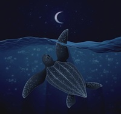
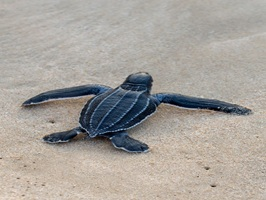
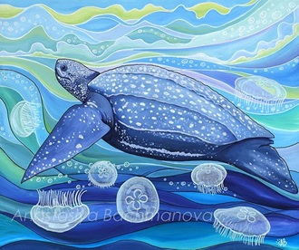

La tortuga laúd enfrenta una combinación de amenazas que han reducido drásticamente su población en las últimas décadas. Una de las principales causas es la contaminación plástica en los océanos, ya que confunden bolsas y desechos con medusas, su alimento principal, lo que provoca su muerte al ingerirlos. También sufren de pesca incidental, quedando atrapadas en redes y anzuelos diseñados para otras especies. A esto se suma la pérdida de playas de anidación por la urbanización y el turismo sin control, que destruyen los lugares donde depositan sus huevos. El cambio climático altera la temperatura de la arena, afectando el equilibrio entre machos y hembras en las crías. Además, la caza ilegal de huevos y carne sigue siendo una práctica en algunas regiones, mientras que los depredadores naturales como aves, perros y otros animales atacan los nidos. La iluminación artificial en playas desorienta a las crías, que en lugar de dirigirse al mar se pierden en tierra firme. El tráfico marítimo provoca choques con embarcaciones y contaminación por combustible, y la acidificación de los océanos afecta las cadenas alimenticias de las que dependen. Finalmente, el turismo sin regulación interrumpe los procesos de incubación y aumenta la vulnerabilidad de esta especie.

El principal problema de la tortuga laúd es la drástica disminución de su población en todo el mundo. En regiones como el Pacífico oriental, apenas quedan unas pocas hembras reproductoras, lo que pone en riesgo la continuidad de la especie. La pérdida de playas de anidación por la urbanización y el turismo sin control reduce los lugares seguros donde depositar sus huevos. La contaminación plástica y la pesca incidental provocan la muerte de miles de ejemplares cada año, mientras que el cambio climático altera la temperatura de la arena, afectando el equilibrio entre machos y hembras en las crías. Además, la caza ilegal de huevos y carne sigue siendo una práctica en algunas comunidades, y los depredadores naturales como aves y perros destruyen nidos completos. Todo esto ha generado un declive superior al 90% en las últimas décadas, convirtiendo a la tortuga laúd en una especie en peligro crítico de extinción y mostrando la fragilidad de los ecosistemas marinos frente a la acción humana.

Para enfrentar la grave situación de la tortuga laúd es necesario aplicar diversas soluciones que permitan asegurar su supervivencia. Una de las más importantes es la protección de las playas de anidación, estableciendo reservas naturales y regulando las actividades humanas en esas zonas críticas. También resulta fundamental la reducción de la contaminación plástica, mediante campañas de reciclaje y la prohibición de plásticos de un solo uso que afectan directamente a los océanos. La implementación de una pesca responsable con redes y anzuelos diseñados para evitar capturas accidentales puede disminuir significativamente la mortalidad de estas tortugas. Además, la educación ambiental es clave para sensibilizar a las comunidades costeras y a la sociedad en general sobre la importancia de conservar esta especie. A nivel global, se requiere de una cooperación internacional que proteja las rutas migratorias y zonas de alimentación, garantizando que las tortugas puedan completar su ciclo de vida. Finalmente, el apoyo de voluntarios y organizaciones ambientales en tareas de vigilancia, rescate y liberación de crías contribuye a fortalecer los esfuerzos de conservación.